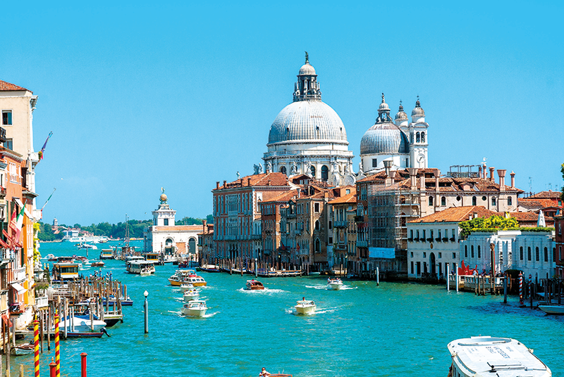
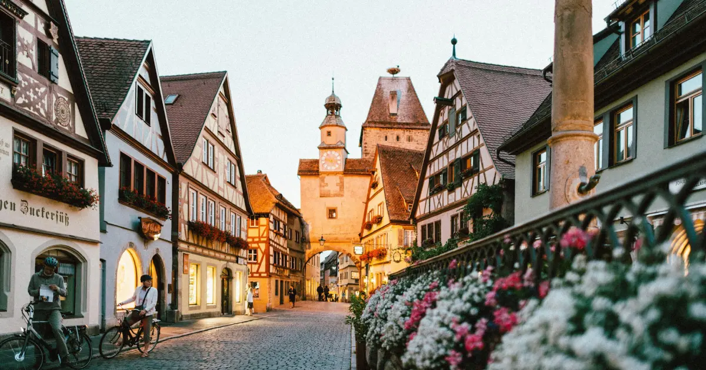

Mostrarei algumas curiosidades interressantes de cada lugar
Uma das cidades mais ricas da China com robôs entrgadores e carros autonomos e um laboratório urbano.
O país é conhecido por ser um dos mais ensolarados do mundo,com mais de 250 dias de sol por ano. Cerca de 80% é composto por montamhas e nehuma do país está a mais de 137 km do mar.

acesse o vídeoNo país ,o número 17 é considerado azarado,ao contrário do 13, devido a numeração romana que se rearranja para VIXI,significando"eu vivi" em latim significa " minha vida acabou"
No país, o sobrenome kim é extremamente popular,representando uma grande parte da população.

acesse o vídeoO país tem mais de 20.000 castelos.Berlim tem mais pontes que Veneza.